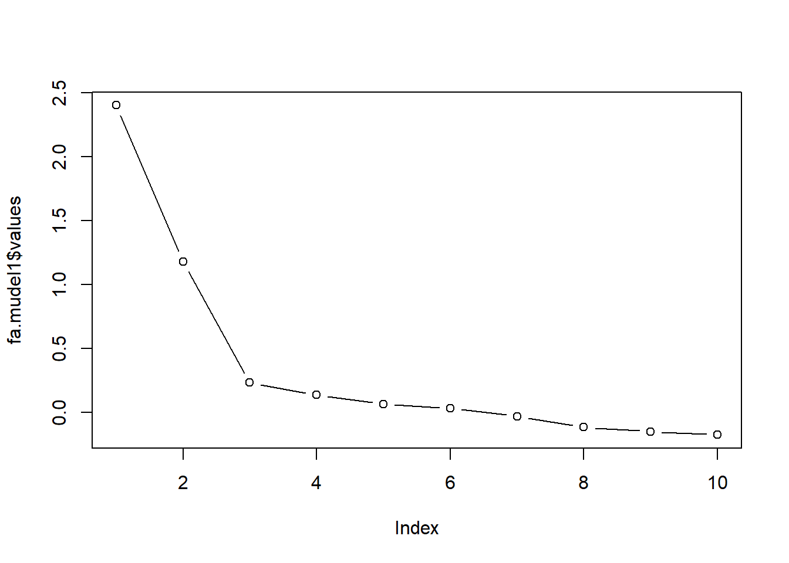

Laadige alla praktikumi andmed.
Nagu ilmselt teate, on olemas 2 lähedast meetodit: faktoranalüüs ja peakomponentide analüüs. Mõlema eesmärgiks on taandada suurem muutujatekogum väikseks arvuks liitmuutujateks. Sageli annavad mõlemad sarnase lõpptulemuse, kuid vahel võivad meetodite tulemused ka erineda.
Faktoranalüüsi eesmärk on kirjeldada mingit suuremat hulka tunnuseid väiksema arvu hüpoteetiliste tunnuste ehk faktorite kaudu.
Peakomponentide analüüsi eesmärk on välja selgitada väiksem hulk komponente, mis vastutavad esialgsete muutujate varieeruvuse eest.
Faktoranalüüs ja peakomponentide analüüs on matemaatilises mõttes erinevad. Faktoranalüüsi käigus eeldatakse, et mõõdetud muutujate varieeruvuse eest vastutavad tekkivad ühisfaktorid ja unikaalsed faktorid. Peakomponentide analüüsi käigus tekitatakse uued muutujad lihtsalt kui lineaarkombinatsioonid mõõdetud muutujatest (vaadake loengu konspektist jooniseid). Faktoranalüüsi on mõistlik kasutada, kui uurija on huvitatud faktoritest, mis vastutavad teatud hulga mõõdetud muutujate varieeruvuse eest. Peakomponentide analüüsi tuleks kasutada, kui uurija soovib lihtsalt andmeid taandada.
Faktoranalüüsi eesmärk on kirjeldada mingit suuremat hulka tunnuseid väiksema arvu hüpoteetiliste tunnuste ehk faktorite kaudu. Faktoranalüüsi eeldused:
Faktoranalüüsi tegemiseks on R-is vähemalt paar erinevat võimalust. Antud praktikumis kasutame kahte lisamoodulit: psych ja GPArotation (see on vajalik faktormudeli pööramiseks).
install.packages("psych")
install.packages("GPArotation")Kui lisamoodulid on edukalt instelleeritud, siis tuleb need ka aktiveerida:
library(psych)
library(GPArotation)Vaatame alustuseks suheliselt lihtsat faktormudelit, mille puhul teame, et sellel on 2-faktoriline struktuur. Laadige R’i andmestik nimega bfi.
Faktoranalüüsi alguspunktiks on analüüsi kaasatavate muuutjate vaheliste korrelatsioonide maatriks. Mõistliku faktorlahendi eelduseks on paraja tugevusega korrelatsioonide kogumid maatriksis. See tähendab, et muutujad, mis seostuvad teistega liiga nõrgalt või liiga tugevalt, võivad osutuda probleemseks.
Teeme alguses tavalise korrelatsioonimaatriksi vastavate tunnustega. Hetkel kasutame andmestikust esimest kümmet veergu. Saame teha uue andmestiku, kus on ainult need veerud:
bfi2 <- bfi[,1:10]Korrelatsioonimaatriksi saab funktsiooni cor abil (mille argument use=“complete” jätab arvutustest välja puuduvate väärtustega andmeread). Funktsioon round selle ümber aitab ümmardada korrelatsioonikordajad kahe komakohani.
bfi2matrix <- round(cor(bfi2, use="complete"), 2)
bfi2matrix## A1 A2 A3 A4 A5 C1 C2 C3 C4 C5
## A1 1.00 -0.34 -0.27 -0.15 -0.18 0.02 0.01 -0.02 0.12 0.05
## A2 -0.34 1.00 0.49 0.34 0.39 0.10 0.13 0.19 -0.15 -0.12
## A3 -0.27 0.49 1.00 0.36 0.51 0.10 0.14 0.12 -0.12 -0.15
## A4 -0.15 0.34 0.36 1.00 0.31 0.10 0.23 0.13 -0.16 -0.25
## A5 -0.18 0.39 0.51 0.31 1.00 0.13 0.11 0.13 -0.12 -0.17
## C1 0.02 0.10 0.10 0.10 0.13 1.00 0.44 0.32 -0.35 -0.26
## C2 0.01 0.13 0.14 0.23 0.11 0.44 1.00 0.37 -0.39 -0.30
## C3 -0.02 0.19 0.12 0.13 0.13 0.32 0.37 1.00 -0.35 -0.35
## C4 0.12 -0.15 -0.12 -0.16 -0.12 -0.35 -0.39 -0.35 1.00 0.48
## C5 0.05 -0.12 -0.15 -0.25 -0.17 -0.26 -0.30 -0.35 0.48 1.00Üldiselt hinnatakse siin nõrgaks korrelatsiooniks korrelatsioone alla 0.3 ja tugevaks loetaks korrelatsioone üle 0.8. Tunnused, mis ei ole teistega seotud või on liiga tugevalt teistega seotud, peaks analüüsist välja jätma. Kui vaatame meie korrelatsioonimaatriksti, siis näeme, et sellise otsuse tegemine ei ole sugugi lihtne. Korrelatsioonimaatriksi põhjal otsustamine ongi üsna subjektiivne. Subjektiivsuse vältimiseks kasutatakse üldisemaid teste, mis näitavad, kas andmestikus on üldiselt porbleeme madalate või tugevate seostega.
Bartletti test näitab, kas maatriksis (seda funktsiooni saab kasutada korrelatsioonimaatriksi ja toorandmete peal) on liiga palju nõrku korrelatsioone. (Täpsemalt öeldes võrdleb see korrelatsioonimaatriksit sellise maatriksiga, millel on väljaspool peadiagonaali nullid.) Bartletti testi saab kasutada psych paketi funktsiooni cortest.bartlett abil:
cortest.bartlett(bfi2)#argumendiks saab anda andmestiku tunnustega või vastavate tunnuste põhjal koostatud korrelatsioonimaatriksi## R was not square, finding R from data## $chisq
## [1] 5664.893
##
## $p.value
## [1] 0
##
## $df
## [1] 45Praegusel juhul on p-väärtus alla 0.05. P-väärtus üle 0.05 näitab probleeme nõrkade korrelatsiooniseoste rohkusega. Sellisel juhul tuleks vaadata korrelatsioonimaatriksit ennast ning katsuda üles leida muutujad, mille puhul esineb vaid üksikuid korrelatsioone väärtusega üle 0.3-e. Nende muutujate puhul tuleks kaaluda faktoranalüüsist välja jätmist.
Korrelatsioonimaatriksi determinandi abil saame uurida vastupidise probleemi ehk liiga tugevate korrelatsioonide esinemist.
det(bfi2matrix)## [1] 0.1243472Probleeme multikollineaarsusega (ehk liiga tugevate muuutjate vaheliste seostega) näitab determinandi väärtus alla \(0.00001−e0.00001−e\) (ehk \(10− 10^−5\)). Kui probleemne multikollineaarsus siiski kinnitust leiab, tuleks korrelatsioonimaatriksist üles otsida kordajad üle 0.9 ja üks vastavatest muutujatest välja jätta. Vahel võib probleeme valmistada ka olukord, kus 3 muutujat korreleeruvad kõik omavahel 0.6 kanti.
Faktoranalüüsi siseselt on olemas erinevaid faktorite leidmise meetode. Üheks peamiseks valikukriteeriumiks võiks olla, kas me soovime üldistada leitavat faktorstruktuuri suuremale populatsioonile (eeldusel, et meie valim koosneb populatsioonist juhuslikult valitud inimestest) või piirduda ainult selle valimiga, mille peal arvutusi tegema hakkame. Populatsioonile üldistamist võimaldavatest on tuntuim suurima tõepära (maximum likelihood) meetod. Kui üldistamise vajadust pole, võib kasutada peatelgede meetodi (principal axis). Peatelgede meetodi soovitatakse eelistada ka siis, kui analüüsi kaasatavates andmetes esineb normaaljaotusest kõrvalekalduvaid muutujaid.
Teeme psych mooduli funktsiooni fa abil 2-faktorilise mudeli kasutades faktorite leidmiseks suurima tõepära meetodi ja faktorite pööramiseks oblimin-meetodit. Salvestame mudeli nimega fa.mudel1.
fa.mudel1 <- fa(bfi2, nfactors = 2, rotate="oblimin", fm="ml")Vaatame natuke lähemalt funktsiooni fa argumente:
Andmestiku nimi - esimesel kohal on alati andmestiku nimi.
nfactors - faktorite arv. Antud juhul eeldame, et andmestikus on kaks latentset faktorit. Tehke analüüs läbi ka suurema arvuga. Kuidas tulemused erinevad esialgsest analüüsist?
fm - faktorite leidmise meetod. fm = ml - kasutame suurima tõepära meetod (mõistlik kui soovida üldistada faktorstruktuuri antud valimilt tervele populatsioonile); fm=pa - peatelgede meetod (järeldused piiratud antud valimiga).
rotate - kas pöörata faktorlahendit ja millise meetodiga. rotate = none - jätab pööramata; rotate=varimax - pöörab faktoreid ortogonaalselt; rotate= oblimin - pöörab faktoreid kaldnurkselt (see on vaikimisi väärtus).
Pööramise eesmärgiks on saavutada võimalikult lihtne faktorstruktuur, kus iga muutuja laaduks tugevalt ainult ühele faktorile ja teistele nõrgalt. Matemaatiliselt pööramine faktorlahendi põhiolemust ei muuda: summaarne seletusprotsent ja tunnuste kommunaliteedid jäävad samaks. Kuid faktorlahend muutub lihtsamini tõlgendatavaks ja omaväärtused jaotuvad faktorite vahel ühtlasemalt. Teeme faktormudeli, kus kasutame direct oblimin meetodit.
Eristatakse kahte tüüpi pööramist: ortogonaalset ehk täisnurkset ja mitteortogonaalset ehk kaldnurkset. Enne pööramist on faktorid sõltumatud, nad ei ole omavahel korreleeritud. Ortogonaalne pööramine jätabki olukorra selliseks; faktorite vahelised korrelatsioonid ei ole lubatud ja kõiki faktoreid pööratakse ühepalju. Kaldnurkse pööramise puhul on faktorite-vahelised korrelatsioonid lubatud ja iga faktorit võib pöörata erineval määral. Otsus kumba pööramist eelistada, peaks tuginema eelkõige teoreetilistele kaalutlustele.
Kui me eeldame, et faktorid peaksid olema üksteisest sõltumatud, tuleks eelistada ortogonaalset pööramist (varimax). Kui aga teooria ütleb, et faktorid on omavahel korreleeritud, on mõistlik valida kaldnurkne pööramine (oblimin).
Faktormudeli fa.mudel1 väljundi saame kätte sellesama nime abil. Samas on ehk natuke kavalam kasutada funktsiooni print.psych, millele saame argumendi cut abil anda piirväärtuse, millest väiksemad faktorlaadungid ära peidetakse. Mitteoluliste laadungite peitmine teeb faktormudeli tõlgendamise reeglina lihtsamaks. Peidame ära 0.3-st väiksemad laadungid. Samuti saame argumendi sort=TRUE abil reastada laadungid faktorite siseselt suuruse järgi.
print.psych(fa.mudel1, cut=0.3, sort=TRUE)## Factor Analysis using method = ml
## Call: fa(r = bfi2, nfactors = 2, rotate = "oblimin", fm = "ml")
## Standardized loadings (pattern matrix) based upon correlation matrix
## item ML2 ML1 h2 u2 com
## C4 9 -0.66 0.43 0.57 1.0
## C2 7 0.62 0.39 0.61 1.0
## C5 10 -0.57 0.35 0.65 1.0
## C1 6 0.57 0.30 0.70 1.0
## C3 8 0.54 0.30 0.70 1.0
## A3 3 0.77 0.57 0.43 1.0
## A2 2 0.65 0.44 0.56 1.0
## A5 5 0.62 0.39 0.61 1.0
## A4 4 0.44 0.26 0.74 1.2
## A1 1 -0.40 0.15 0.85 1.1
##
## ML2 ML1
## SS loadings 1.80 1.78
## Proportion Var 0.18 0.18
## Cumulative Var 0.18 0.36
## Proportion Explained 0.50 0.50
## Cumulative Proportion 0.50 1.00
##
## With factor correlations of
## ML2 ML1
## ML2 1.00 0.32
## ML1 0.32 1.00
##
## Mean item complexity = 1
## Test of the hypothesis that 2 factors are sufficient.
##
## The degrees of freedom for the null model are 45 and the objective function was 2.03 with Chi Square of 5664.89
## The degrees of freedom for the model are 26 and the objective function was 0.17
##
## The root mean square of the residuals (RMSR) is 0.04
## The df corrected root mean square of the residuals is 0.05
##
## The harmonic number of observations is 2762 with the empirical chi square 403.51 with prob < 2.4e-69
## The total number of observations was 2800 with Likelihood Chi Square = 464.04 with prob < 9.2e-82
##
## Tucker Lewis Index of factoring reliability = 0.865
## RMSEA index = 0.078 and the 90 % confidence intervals are 0.071 0.084
## BIC = 257.67
## Fit based upon off diagonal values = 0.98
## Measures of factor score adequacy
## ML2 ML1
## Correlation of (regression) scores with factors 0.86 0.88
## Multiple R square of scores with factors 0.74 0.77
## Minimum correlation of possible factor scores 0.49 0.54Väljundis on esimesena näha faktorlaadungite tabel (Standardized loadings…). Laadung näitab väite ja faktori vahelise korrelatsioonikordaja väärtust (kaldnurkse pööramise korral regressioonikordaja). Iga väite/muutuja puhul tuleks vaadata, millisele faktorile see tugevalt laadub. Rusikareegilina võib oluliseks pidada laadungit absoluutväärtusega \(0.3 − 0.4\) (sõltuvalt valimi suurusest). Seejärel tuleks faktoreid tõlgendada. Faktorite tähendus moodustub neile tugevalt laaduvatest muutujatest. Mis on ühele faktorile tugevalt laaduvate muutujate ühisosa? Antud juhul näeme, et sotsiaalsusega seotud väidete (tunnused A1-A5) suuremad laadungid ongi koondunud ühte faktorisse ja meelekindluse väited (C1-C5) teise faktorisse. Mida suurem laadungi absoluutväärtus, seda olulisem on muutuja faktori tõlgendamisel. Arvesse tuleks võtta ka faktorlaadungi märki. Nt väide A1 seostub faktoriga negatiivselt (tabelist bfi.dictionary võib näha, et väite sisu on Am indifferent to the feelings of others), samas kui nt A2 (Inquire about others’ well-being) seostub faktoriga positiivselt. Sarnane on lugu ka meelekindluse väidete puhul. Väited C4 (Do things in a half-way manner) ja C5 (Waste my time) seostuvad faktoriga negatiivselt, samas kui ülejäänud väited positiivselt.
Lisaks laadungitele on tabeli paremas servas veel paar tulpa. Tulbas nimega h2 paiknevad kommunaliteedid, mis näitavad kui suure osa muutuja variatiivususest faktorid summaarselt ära kirjeldavad. Kui mõne väite kommunaliteet on teistest oluliselt väiksem, tasub kaaluda selle analüüsist välja jätmist, kuna pole teistega lineaarselt seotud. Tulbas u2 olevad arvud näitavad iga muutuja unikaalse variatiivsuse hulka (st nad on see osa tunnuse varitiivsusest, mis kommunaliteedist üle jääb). Funktsiooni fa väljundis on laadungite tabelil veel üks tulp com (ehk complexity, keerukus). See näitaja iseloomustab faktorite arvu, mida antud faktorlahendis muutuja kirjeldamiseks vaja läheb. Allpool on ära toodud ka keskmine keerukus, mida saab kasutada erinevate faktormudelite võrdlemiseks. Kuna me tahame, et faktorstruktuur oleks võimalikult lihtne (st iga muutuja seostuks ainult ühe faktoriga), siis mida lähemal on keskmine keerukus 1-le, seda parem faktormudel.
Faktorlaadungite tabeli all näeme faktorite omaväärtusi (SS loadings ehk sum of squared loadings). Samuti näeme, kui suure osa andmete hajuvusest iga faktor seletab (Proportion Var) ja kui suure osa faktorite poolt seletatavast hajuvusest mingi faktor seletab(Proportion Explained). Lisaks on kaks viimast näitajat ära toodud ka kumulatiivselt. Kui tahame teada, kui suure osa andmete hajuvusest antud mudeli faktorid ära kirjeldavad, tuleks vaadata rea Cumulative var kõige parempoolsemat väärtust.
Omaväärtuste ja seletusprotsentide tabelist allapoole on ära toodud veel mudeli sobitusastme näitajad. Näitaja Fit based upon off diagonal values põhineb mudeli jääkide ja tegelike korrelatsioonide suhtelise suuruse võrlemisel. Jäägid kujutavad endast mudeli järgi taastatud korrelatsioonimaatriksi ja tegeliku korrelatsioonimaatriksi vahelisi erinevusi. Antud näitaja on saadud jagades jääkide ruutsumma tegelike korrelatsioonide ruutsummaga ja lahutades saadud arvu 1-st. Väärtused üle 0.95-e näitavad mudeli head sobitusastet.
Faktoranalüüsi väljundist saame kätte faktorite omaväärtused. Kaiseri kriteerium - kõigi faktorlahendisse võetavate faktorite omaväärtused peavad olema vähemalt 1, R rakendab seda kriteeriumit automaatselt. R’i väljundis ongi ainult näidatud sellele kirteeriumile vastavate faktorite omaväärtused. Saame vaadata ka kõikide faktorite omaväärtusi:
fa.mudel1$values## [1] 2.40061802 1.17958504 0.23248809 0.13639149 0.06524101
## [6] 0.03278369 -0.02901261 -0.11562342 -0.14875756 -0.17413306Catelli kriteerium - omaväärtuste joonise põhjal otsustamine. Alles tuleks jätta faktorid, mis jäävad omaväärtuste graafikul nn jõnksupunktist ülespoole. Kriteeriumi hindamiseks vajaliku faktormudeli omaväärtuste graafiku saame teha andes omaväärtused ette funktsioonile plot. Funktsiooni argument type = b (b nagu both) ütleb, et tahame joonisele nii omaväärtusi tähistavaid punkte, kui ka neid ühendavaid jooni.
plot(fa.mudel1$values, type="b")
Kui me ülalpool tegime mudeli nimega fa.mudel1, tellisime funktsioonilt fa ka faktorskooride arvutamise. Need skoorid näitavad, kus iga vastaja teatud faktoril paikneb. Skooride arvutamiseks kasutatakse inimeste vastuseid väidetele ja faktorlaadungeid. Lihtsustades võib öelda, et inimese faktorskoor saadakse korrutades iga väite vastuse selle väite laadungiga ning need korrutised liidetakse kokku. (Tegelikkuses on arvutused natuke keerulisemad. Kõigepealt arvutatakse välja faktorskoori koefitsiendid, mis saadakse laadungite maatriski korrutamisel algse korrelatsioonimaatriksi pöördmaatriksiga ning neid koefitsiente hakatakse siis korrutama ja kokku liitma.)
Faktorskoore saab kasutada edasistes arvutustes, nt võime uurida, kas faktor seostub mingite teiste muutujatega. Skoorid saame mudelist kätte lisades mudeli nime lõppu dollari märgi ja “scores”. Salvestame skoorid eraldi tabelisse ja vaatame esimesi ridu.
skoorid <- data.frame(fa.mudel1$scores)
head(skoorid)## ML2 ML1
## 1 -1.37782435 -0.9093545
## 2 -0.35169413 -0.2304038
## 3 -0.15698432 -0.4492556
## 4 -1.09123808 0.1586491
## 5 -0.04892757 -0.8470346
## 6 1.33536224 0.4145664R on pannud faktoritele mittemidagiütlevad nimed “ML2” ja “ML1”. Eelnevalt nägime faktorlaadungite tabelist, et esimesele faktorile laadusid tugevamalt meelekindluse väited ja teisele sotsiaalsuse väited. Nimetame selguse huvides faktorid ümber: paneme meelekindluse faktorile nimeks C (nagu Conscientiousness) ja sotsiaalsuse faktorile A (nagu Agreeableness).
colnames(skoorid) <- c("C", "A")Faktoranalüüsi kasutatakse eriti sageli küsimustikuandmete analüüsimiseks. Kui oleme kindlaks teinud, millised väited mingile faktorile laaduvad, tahame vahel arvutada küsimustiku alaskaalade kohta ka reliaablusnäitajaid nagu Cronbachi alfa. Selle jaoks on psych moodulis olemas funktsioon alpha, millele tuleks ette anda alaskaala väidete toorandmed. Antud juhul teame, et sotsiaalsuse väited paiknevad tabeli bfi2 tulpades 1-5. Seega saaksime sotsiaalsuse alaskaala alfa kätte nii:
alpha(bfi2[,1:5])## Warning in alpha(bfi2[, 1:5]): Some items were negatively correlated with the total scale and probably
## should be reversed.
## To do this, run the function again with the 'check.keys=TRUE' option## Some items ( A1 ) were negatively correlated with the total scale and
## probably should be reversed.
## To do this, run the function again with the 'check.keys=TRUE' option##
## Reliability analysis
## Call: alpha(x = bfi2[, 1:5])
##
## raw_alpha std.alpha G6(smc) average_r S/N ase mean sd
## 0.43 0.46 0.53 0.15 0.85 0.016 4.2 0.74
##
## lower alpha upper 95% confidence boundaries
## 0.4 0.43 0.46
##
## Reliability if an item is dropped:
## raw_alpha std.alpha G6(smc) average_r S/N alpha se
## A1 0.72 0.73 0.67 0.398 2.64 0.0087
## A2 0.28 0.30 0.39 0.097 0.43 0.0219
## A3 0.18 0.21 0.31 0.061 0.26 0.0249
## A4 0.25 0.31 0.44 0.099 0.44 0.0229
## A5 0.21 0.24 0.36 0.072 0.31 0.0238
##
## Item statistics
## n raw.r std.r r.cor r.drop mean sd
## A1 2784 0.066 0.024 -0.39 -0.31 2.4 1.4
## A2 2773 0.630 0.666 0.58 0.37 4.8 1.2
## A3 2774 0.724 0.742 0.72 0.48 4.6 1.3
## A4 2781 0.686 0.661 0.50 0.37 4.7 1.5
## A5 2784 0.700 0.719 0.64 0.45 4.6 1.3
##
## Non missing response frequency for each item
## 1 2 3 4 5 6 miss
## A1 0.33 0.29 0.14 0.12 0.08 0.03 0.01
## A2 0.02 0.05 0.05 0.20 0.37 0.31 0.01
## A3 0.03 0.06 0.07 0.20 0.36 0.27 0.01
## A4 0.05 0.08 0.07 0.16 0.24 0.41 0.01
## A5 0.02 0.07 0.09 0.22 0.35 0.25 0.01Üldjuhul saab programm ise aru, kui alaskaala mõnede väidete vastused seostuvad teistega negatiivselt ja võtab seda arvesse. Aga kindluse mõttes võime funktsioonile alpha argumendi keys abil ette anda ka väidete suuna. Tagurpidi väiteid tähistab -1 ja õiges suunas väiteid 1.
alpha(bfi2[,1:5], keys=c(-1, 1, 1, 1, 1))##
## Reliability analysis
## Call: alpha(x = bfi2[, 1:5], keys = c(-1, 1, 1, 1, 1))
##
## raw_alpha std.alpha G6(smc) average_r S/N ase mean sd
## 0.7 0.71 0.68 0.33 2.5 0.009 4.7 0.9
##
## lower alpha upper 95% confidence boundaries
## 0.69 0.7 0.72
##
## Reliability if an item is dropped:
## raw_alpha std.alpha G6(smc) average_r S/N alpha se
## A1- 0.72 0.73 0.67 0.40 2.6 0.0087
## A2 0.62 0.63 0.58 0.29 1.7 0.0119
## A3 0.60 0.61 0.56 0.28 1.6 0.0124
## A4 0.69 0.69 0.65 0.36 2.3 0.0098
## A5 0.64 0.66 0.61 0.32 1.9 0.0111
##
## Item statistics
## n raw.r std.r r.cor r.drop mean sd
## A1- 2784 0.58 0.57 0.38 0.31 4.6 1.4
## A2 2773 0.73 0.75 0.67 0.56 4.8 1.2
## A3 2774 0.76 0.77 0.71 0.59 4.6 1.3
## A4 2781 0.65 0.63 0.47 0.39 4.7 1.5
## A5 2784 0.69 0.70 0.60 0.49 4.6 1.3
##
## Non missing response frequency for each item
## 1 2 3 4 5 6 miss
## A1 0.33 0.29 0.14 0.12 0.08 0.03 0.01
## A2 0.02 0.05 0.05 0.20 0.37 0.31 0.01
## A3 0.03 0.06 0.07 0.20 0.36 0.27 0.01
## A4 0.05 0.08 0.07 0.16 0.24 0.41 0.01
## A5 0.02 0.07 0.09 0.22 0.35 0.25 0.01Väljundi ülaosas olev raw alpha ongi sotsiaalsuse alaskaala Cronbachi alfa. Tabelis Reliability if an item is dropped on näha, mis juhtuks skaala alfaga, kui väide välja jätta. Kui selles on näha väiteid, mille alfa väärtus on suurem kui terve skaala oma, siis nende välja jätmine parandaks skaala üldist reliaablust.
Peakomponentide analüüsi eesmärk on välja selgitada väiksem hulk komponente, mis vastutavad esialgsete muutujate varieeruvuse eest. Faktoranalüüs ja peakomponentide analüüs on matemaatilises mõttes erinevad. Faktoranalüüsi käigus eeldatakse, et mõõdetud muutujate varieeruvuse eest vastutavad tekkivad ühisfaktorid ja unikaalsed faktorid. Peakomponentide analüüsi käigus tekitatakse uued muutujad lihtsalt kui lineaarkombinatsioonid mõõdetud muutujatest. Faktoranalüüsi on mõistlik kasutada, kui uurija on huvitatud faktoritest, mis vastutavad teatud hulga mõõdetud muutujate varieeruvuse eest. Peakomponentide analüüsi tuleks kasutada, kui uurija soovib lihtsalt andmeid taandada.
Peakomponentide analüüsi saab teha funktsiooni principal abil. Selle argumendid on samad mis funktsioonil fa (välja arvatud puuduv faktorite leidmise meetodi argument fm). Ülaltoodud faktoranalüüsi mudelile analoogse peakomponentide mudeli saaksime teha nii:
pc.mudel1 <- principal(bfi2, nfactors=2, rotate="varimax")pc.mudel1 #tulemuste vaatamineTehke see analüüs enda arvutis läbi ja võrrelega tulemusi eelneva analüüsiga. Kas leiate tulemustes erinevusi?
Kastuage andmestikku WV6_EST2011.
Ülesanne 1. Kirjeldav statistika. Lahendage järgnevad ülesanded:
1.1. valimi suurus:
1.2. milline on sooline jaotus:
1.3. vastajate keskmine vanus:
1.4. kõige noorem vastaja:
1.5. kõige vanem vastaja:
1.6. naiste vanuse keskmine ja standardhälve:
1.7. meeste keskmine vanus ja standardhälve:
Ülesanne 2. Regressioon. Kas eluga rahulolu (muutuja “SatisfactionWithLife”) ennustab vanust?
2.1 Kas mudel on statistiliselt oluline?
2.2 Mis on selle väite olulisuse tõenäosus?
2.3 Kui suure osa sõltuva muutuja variatiivsusest kirjeldab ära mudel?
2.4 Missugune on mudeli standardiseerimata võrrand?
Ülesanne 3. Mitmene regressioon. Kas vanust ennustavad terviseseisund (muutuja “StateOfHealth”), õnnelikkus (muutuja “FeelingOfHappiness”) ning finantsseisuga rahulolu (muutuja “Sat_w_financial”)?
3.1 Kas mudel on statistiliselt oluline?
3.2. Kui suure osa seletas ära mudel sõltuva muutuja variatiivsusest?
3.3. Kas kõik prediktorid olid olulised?
3.4. Milline prediktor ennustas kõige paremini vanust?
Kasutage andmestikku nimega bfi.
Ülesanne 4. Tehke läbi faktoranalüüs ka teiste tunnustega. Kasutage korraga kõiki alaskaalasid ja vaadake, kas saate 5-faktorilise mudeli.